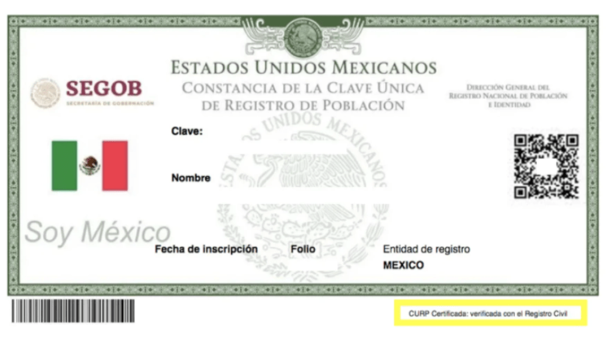

Clave Única de Registro de Población
¿Qué es la CURP?
La Clave Única de Registro de Población (CURP), es un instrumento que
sirve para registrar en forma individual a todas las personas habitantes del país,
nacionales y residentes extranjeras, así como a mexicanas y mexicanos que radican en otros países.
¿Qué necesito para tramitar mi CURP?
Para solicitar la CURP, se requiere presentar original y copia del documento probatorio de identidad
(acta de nacimiento, carta de naturalización, certificado de nacionalidad mexicana, visa diplomática
o documento migratorio) y de una identificación oficial vigente con fotografía.

¿En dónde puedo realizar mi trámite de CURP?
Para personas mexicanas o que tienen cargos diplomáticos, en el módulo CURP más cercano al domicilio. Consulta el Directorio de módulos para el trámite de la CURP. Para personas residentes extranjeras, en el Instituto Nacional de Migración.
¿Cómo solicito la corrección de mi CURP?
En caso de que tu CURP contenga datos erróneos, acude a tu módulo CURP con original y copia de la identificación oficial con fotografía y del documento probatorio de identidad correspondiente.

Si necesito mayor información sobre mi CURP ¿qué hago?
Solicita apoyo al Centro de Atención a Usuarios de la CURP, en el 51 28 11 11 desde la Ciudad de
México y al 01 800 911 11 11 en el resto del país.